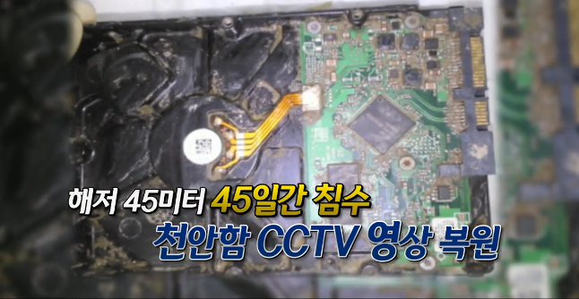
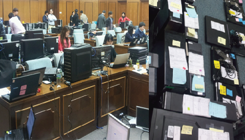

2010
천안함
기술 지원 성과침수·부식 저장매체의 CCTV 영상 복원
저장매체 분리·세척부터 영상 복원, 포렌식 검증까지 수행했습니다.
디지털포렌식부터 침해사고 조사, 기업 보안 관리까지(주)명정보기술 디지털포렌식센터가 기업의 데이터를 책임집니다.
국가적 디지털 재난 현장에서 축적한 경험,
기업의 디지털 안전을 지키는 기술로
명정보기술은 36년간 현장에서 축적한 복구·검증 역량을 바탕으로
기업의 디지털 증거 분석과 보안사고 조사·대응을 지원합니다.

저장매체 분리·세척부터 영상 복원, 포렌식 검증까지 수행했습니다.

손상된 데이터 구조를 분석하고, 방송사·금융권의 피해 시스템 복구를 지원했습니다.

장기간 침수된 저장매체에서 CCTV 영상을 복원하고 포렌식 검증 후 원본을 봉인·인계했습니다.
기기에 남은 기록을, 사건의 근거로 연결합니다.

원본 보존부터 분석과 교차 검토까지.
결론을 뒷받침하는 기록을 함께 확인합니다.
PC·저장매체, 스마트폰, 대화와 미디어에 남은 기록을 분석해 주요 행위와 사건의 시간 흐름을 확인합니다.
주요 행위 타임라인 · 증거 목록 · 분석 보고서
사고의 흐름을 밝히고, 대응의 우선순위를 정합니다.
시스템·계정·로그에 남은 흔적을 연결해 사고의 발생 경위, 영향받은 범위와 후속 대응에 필요한 근거를 조사합니다.
유입 경로, 암호화 피해와 백업·복구 조건을 검토합니다.
의심 파일과 시스템·네트워크 기록에서 침해 흔적을 확인합니다.
계정 활동, 권한 변경과 자료 노출 가능성을 조사합니다.

시스템 · 인증 · 네트워크 로그
시간 · 계정 · 자산별 흔적 연결
영향 범위 · 복구 검토 · 개선 과제
점검과 자료 관리부터, 안전한 운영 환경 구축까지.

보안 설정과 업무 자료를 살피고, 필요한 솔루션과 저장 환경을 연결합니다. 점검 결과부터 구축 후 운영 안내까지 기업의 환경에 맞춰 지원합니다.
기업 보안 관리 자세히 보기보안 점검 보고서
자료 인계 체크리스트
인프라 구성·운영 계획